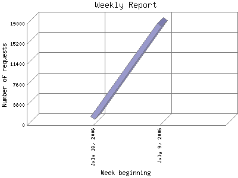

The Weekly Report identifies the activity for each week within the report
time frame. Remember that one page hit can result in several server requests
as the images for each page are loaded.
Note: Depending on the
report time frame for this report the first and last week may not represent
a full seven day week, resulting in lower hits.

| Week beginning | Number of requests | Number of page requests | |
|---|---|---|---|
| 1. | July 9, 2006 | 18,786 | 152 |
| 2. | July 16, 2006 | 1,380 | 88 |
Most active week beginning July 9, 2006 : 152 pages sent.
Weekly average: 80 pages sent. 6722 requests handled. 608.148 TB bytes served.
This report was generated on July 19, 2006 03:35.
Report time frame July 12, 2006 05:31 to July 18, 2006 23:50.
| Web statistics report produced by: | |
| analog 5.1 | Report Magic for Analog 2.10 |